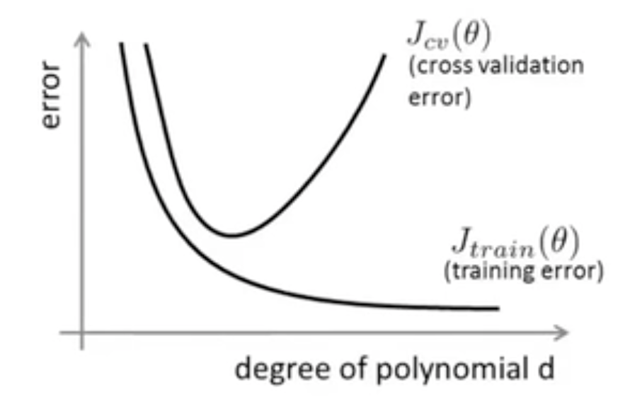
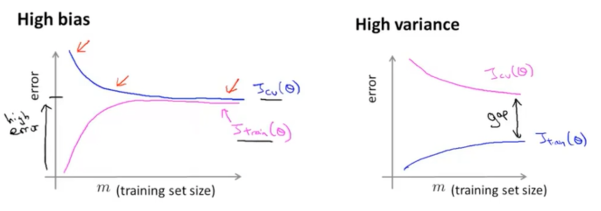
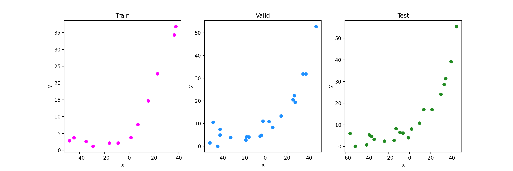
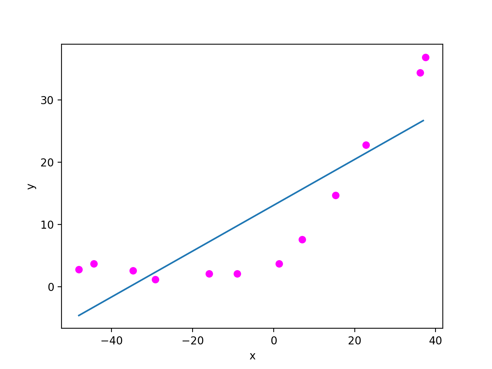
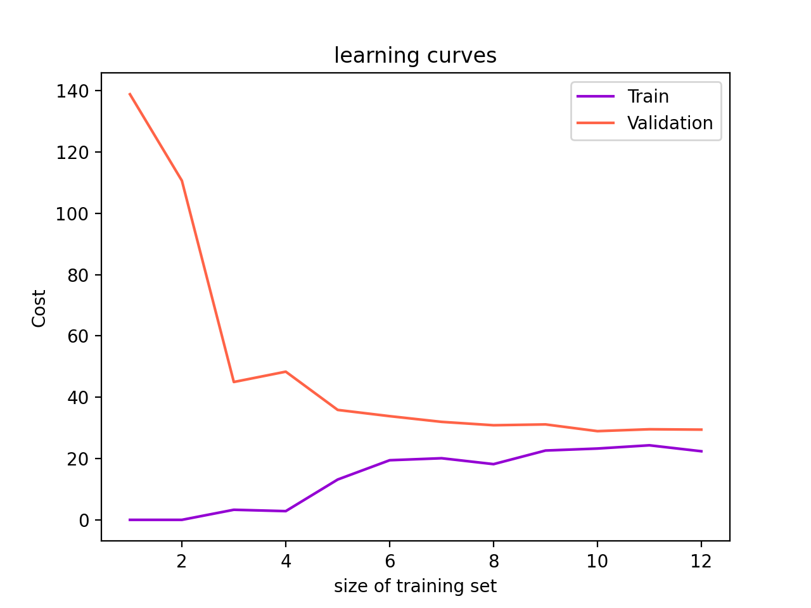
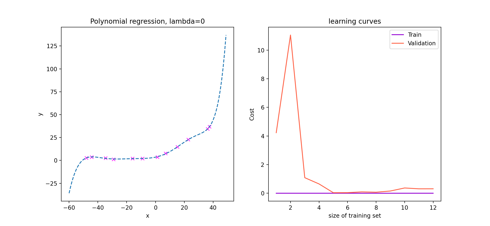
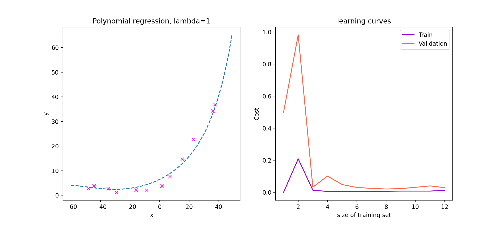
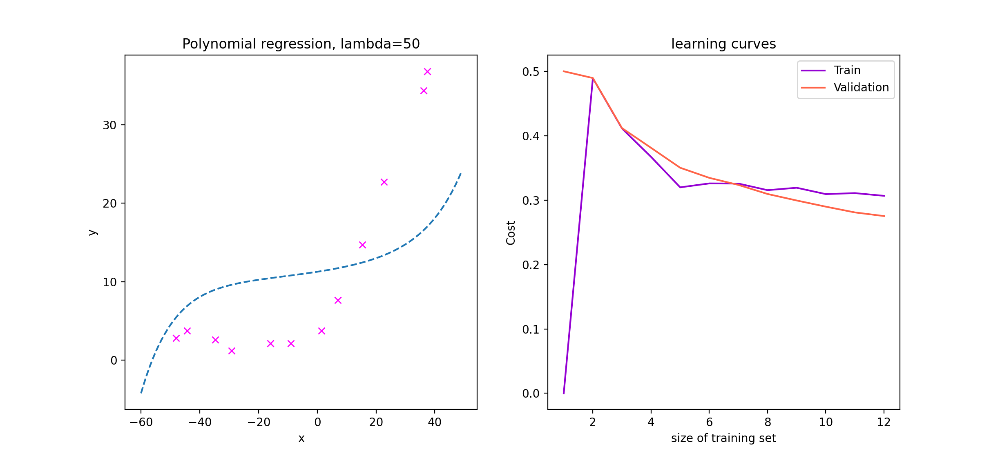
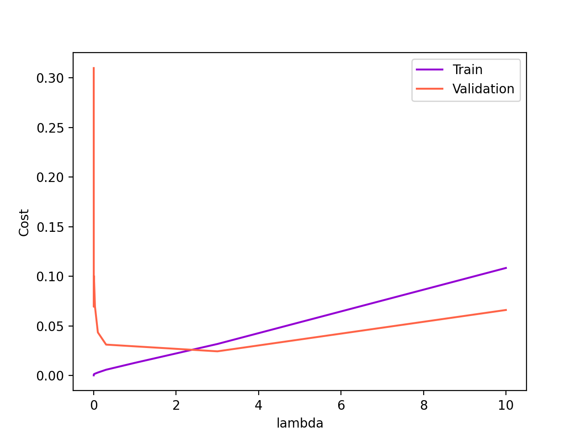

吴恩达机器学习系列课程：https://www.bilibili.com/video/BV164411b7dx
训练集、验证集与测试集
在以往的实验中，我们把所有数据集拿来训练一个模型，之后用它来测试准确率。这显然不是一个好的做法，因为即便准确率很高，那也可能有过拟合的问题。正确的做法应该是用一个与训练集独立的测试集进行测试，这样才能保证得到的结果公平有效。
进一步，如果模型中含有超参数，例如正则化的参数 \(\lambda\)，这是需要我们人工设置的。不同的超参数得到的结果也不同，我们自然会去选择结果最好的超参数，于是又产生了同样的问题：我们对超参数的选择依赖于模型的结果，而结果又产生自测试集，所以我们依旧没能做到在一个完全独立的测试集上进行测试。所以我们引入验证集，即用验证集而非测试集去调参，最后在测试集上跑结果。测试集自始至终不参与模型的建立。
值得一提的是，如果我们在训练过程中加入了正则项，那么在计算模型的代价函数（误差）的时候应该去掉正则项。这是因为加入正则项的目的是训练出一个更为合理的参数 \(\theta\)，而为了评价这个参数 \(\theta\) 的好坏，原本的代价函数才是真正的代价。
高偏差与高方差
在欠拟合的时候，我们称模型是高偏差的；过拟合时，称模型是高方差的。以多项式回归为例，随着多项式系数的增加，我们从欠拟合逐渐过渡到过拟合，训练集上的代价函数 \(J_\text{train}(\theta)\) 逐渐减小，但是验证集上的代价函数 \(J_\text{valid}(\theta)\) 先减小后增大，形成下图所示情况：

学习曲线
误差函数关于训练集大小的曲线，称为学习曲线。作出学习曲线有利于帮助我们分析模型是否过拟合/欠拟合。
如果模型欠拟合，具有高偏差，当训练集大小很小时，\(J_\text{train}(\theta)\) 比较小，而 \(J_\text{valid}(\theta)\) 很大；随着训练集大小的增大，\(J_\text{train}(\theta)\) 迅速增大，\(J_\text{valid}(\theta)\) 减小，但是减小的幅度不大；最后，当训练集大小很大时，二者基本相当且都比较大。
如果模型过拟合，具有高方差，当训练集大小很小时，\(J_\text{train}(\theta)\) 很小，而 \(J_\text{valid}(\theta)\) 很大；随着训练集大小的增大，\(J_\text{train}(\theta)\) 增大，但是增大的幅度不大，而 \(J_\text{valid}(\theta)\) 减小，但是减小的幅度也不大；最后，当训练集大小很大时， \(J_\text{train}(\theta)\) 较小，但 \(J_\text{valid}(\theta)\) 较大。

从上面的分析以及图像也可以看出，如果模型发生了欠拟合，那么增加训练集的数据量并没有什么帮助；而如果模型发生了过拟合，增加训练集的数据量有一定的帮助。
实现
第一部分·正则化线性回归
首先看一下数据集：

回忆正则化线性回归的矩阵形式： \[
\begin{align}
J(\theta)&=\frac{1}{2m}\left[\theta^TX^TX\theta-2\theta^TX^Ty+y^Ty+\lambda\hat\theta^T\hat\theta\right]\\
\frac{\partial J}{\partial \theta}&=\frac{1}{m}\left[X^TX\theta-X^Ty+\lambda\hat\theta\right]
\end{align}
\]
其中，\(\hat\theta\) 是将 \(\theta_0\) 置为 \(0\) 后的 \(\theta\)（因为不对 \(\theta_0\) 做惩罚）。
1
2
3
4
5
6
7
8
9
10
11
12
13
14
15
16
17
18
19
20
21
22
23
24
25
26
27
28
29
30
31
32
33
34
35
36
37
| import numpy as np
from scipy.io import loadmat
from scipy.optimize import minimize
import matplotlib.pyplot as plt
data = loadmat('ex5data1.mat')
X, y, Xval, yval, Xtest, ytest = \
data['X'], data['y'], data['Xval'], data['yval'], data['Xtest'], data['ytest']
X = np.hstack((np.ones((X.shape[0], 1)), X))
Xval = np.hstack((np.ones((Xval.shape[0], 1)), Xval))
Xtest = np.hstack((np.ones((Xtest.shape[0], 1)), Xtest))
def unseq(theta):
return theta.reshape(theta.shape[0], 1)
def seq(theta):
return theta.flatten()
def J(theta, X, y, lamb):
m = X.shape[0]
thetahat = np.vstack((np.zeros((1, 1)), theta[1:, :]))
return ((theta.T@X.T@X@theta-2*theta.T@X.T@y+y.T@y+lamb*thetahat.T@thetahat)/m/2)[0][0]
def partJ(theta, X, y, lamb):
m = X.shape[0]
thetahat = np.vstack((np.zeros((1, 1)), theta[1:, :]))
return (X.T@X@theta-X.T@y+lamb*thetahat)/m
def Train(X, y):
return minimize(fun = lambda theta, X, y, lamb: J(unseq(theta), X, y, lamb),
x0 = np.array([1, 1]),
jac = lambda theta, X, y, lamb: seq(partJ(unseq(theta), X, y, lamb)),
args = (X, y, 1),
method = 'CG')
res = Train(X, y)
print(res)
|
回归结果为：
1
2
3
4
5
6
7
8
9
| fun: 22.3795418229475
jac: array([ 3.74520898e-06, -1.25949765e-07])
message: 'Optimization terminated successfully.'
nfev: 28
nit: 18
njev: 28
status: 0
success: True
x: array([13.08771802, 0.36774202])
|
回归曲线如下：

第二部分·学习曲线的绘制
依次增大训练集的大小，计算训练集的误差和测试集的代价函数（注意这时候计算代价应该取 \(\lambda=0\)）：
1
2
3
4
5
6
7
8
9
10
11
12
13
14
15
| Z_train = []
Z_valid = []
for i in range(1, 1+X.shape[0]):
res = Train(X[:i, :], y[:i, :])
Z_train.append(J(unseq(res.x), X[:i, :], y[:i, :], 0))
Z_valid.append(J(unseq(res.x), Xval, yval, 0))
ax = plt.subplot(1, 1, 1)
ax.set_xlabel('size of training set')
ax.set_ylabel('Cost')
ax.set_title('learning curves')
ax.plot(range(1, 1+len(Z_train)), Z_train, color='darkviolet', label='Train')
ax.plot(range(1, 1+len(Z_valid)), Z_valid, color='tomato', label='Validation')
ax.legend()
plt.show()
|
作图如下：

可以看见，这是一个典型的欠拟合图像，模型是高偏差的。
第三部分·多项式回归
欠拟合的原因是我们使用了线性回归，而数据集显然不是线性的。为了更好的拟合之，我们采用多项式回归。
注意增加高次特征后，特征取值范围可能很大，需要规范化处理：
1
2
3
4
5
6
7
8
9
10
11
12
13
14
15
16
17
18
19
20
21
22
23
24
25
| data = loadmat('ex5data1.mat')
X, y, Xval, yval, Xtest, ytest = \
data['X'], data['y'], data['Xval'], data['yval'], data['Xtest'], data['ytest']
dim = 9
meanX, stdX = [], []
meany, stdy = 0, 0
def featurePrepare(X, y):
"""
feature extension & normalization
"""
global meanX, stdX, meany, stdy
res = np.empty((X.shape[0], 0))
for i in range(dim):
tmpX = X ** i
meanX.append(np.mean(tmpX, axis=0))
stdX.append(np.std(tmpX, axis=0))
if i:
tmpX = (tmpX - meanX[i]) / stdX[i] if stdX[i] else tmpX - meamX[i]
res = np.hstack((res, tmpX))
meany = np.mean(y, axis=0)
stdy = np.std(y, axis=0)
y = (y - meany) / stdy if stdy else y - meany
return res, y
|
首先，使用最高次为 \(8\) 的多项式，且正则化项 \(\lambda=0\)，得到拟合效果和学习曲线如下：

过拟合。
取 \(\lambda=1\)，得到拟合效果和学习曲线如下：

取 \(\lambda=50\)，得到拟合效果和学习曲线如下：

欠拟合。
接下来我们依次计算在若干 \(\lambda\) 下的代价，并作图如下：

可以看出，在 \(\lambda=3\) 的时候验证集的代价最小，所以我们最终可以选定取 \(\lambda=3\).
此时，测试集的代价为：\(J_\text{test}(\theta)=0.01393303991254464\).